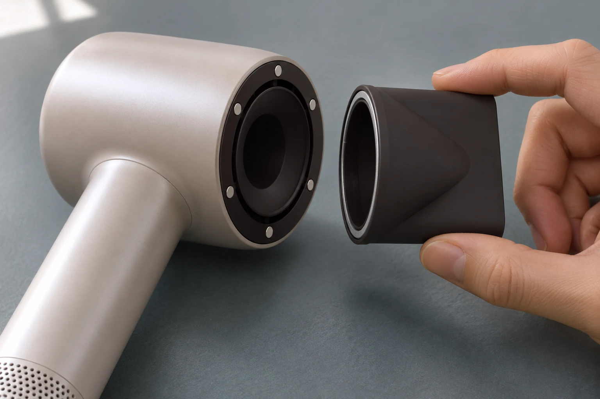
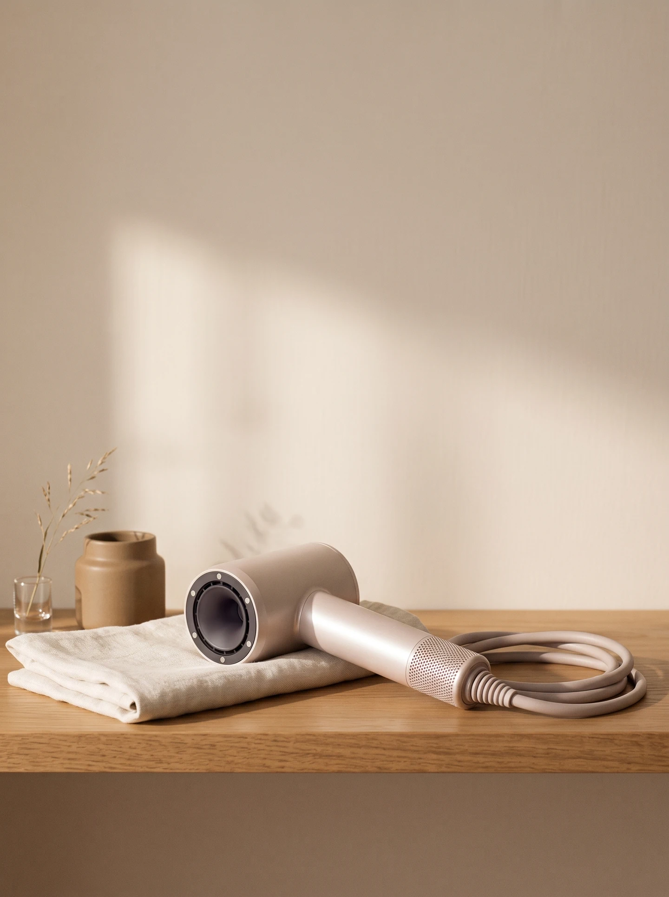
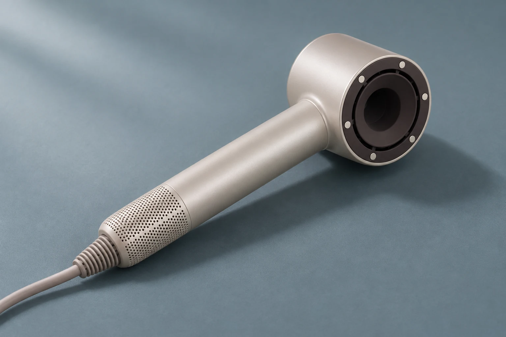
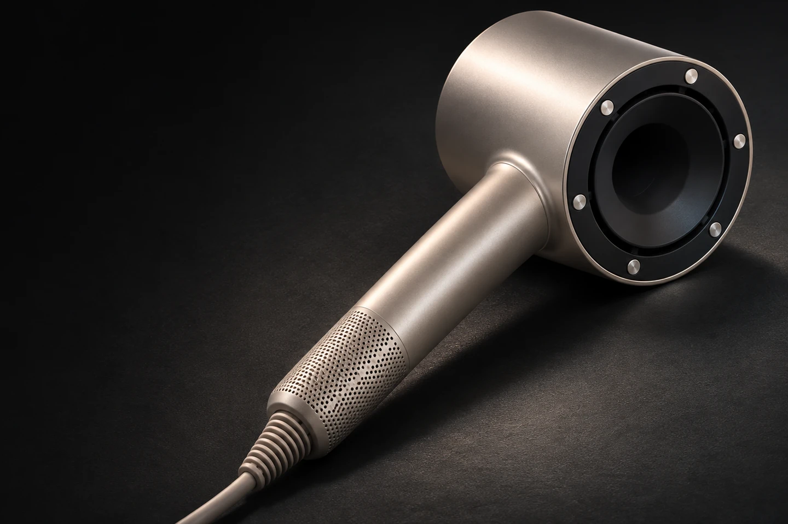

Фен для волос
Для прядей и волн
Концентратор ведёт воздух вдоль пряди. Диффузор распределяет его вокруг завитка.
- Двигатель BLDC
- 110 000 об/мин
- Нагрев
- 4 режима
- Магнитное крепление
- 2 насадки
Как крепятся магнитные насадки
BLDC
Воздух входит через ручку
Отверстия у основания ручки подают воздух к двигателю.

Две насадки

Магнитное крепление
Шесть магнитов по кругу
Поднесите насадку к кольцу вокруг сопла.

Управление на ручке

Включение фена
Круглая кнопка в верхней части ручки включает и выключает фен. Под ней виден маленький индикатор.
Настройка обдува
Верхняя часть сдвоенной клавиши отмечена вентилятором. Ею регулируют воздушный поток.
Четыре режима нагрева
Нижняя часть клавиши с тремя волнами переключает нагрев. Обдув настраивается соседней клавишей.
Укладка диффузором
Чаша поддерживает завиток снизу.


В комплекте
- Фен
- Диффузор
- Концентратор
На полке в ванной
Компактный корпус и насадки на магнитах: после укладки фен легко убрать.

Характеристики
Все параметры 8
- Модель
- HCD1002-CE
- Мощность
- 1600 Вт
- Температурные режимы
- 4
- Двигатель
- Бесщёточный, BLDC
- Частота вращения
- 110 000 об/мин
- Насадки
- Диффузор и концентратор
- Питание
- 220–240 В · 50/60 Гц
- Ионизация
- Есть
Подойдут ли насадки от другого фена?
Для этого фена предусмотрены собственные магнитные диффузор и концентратор. При выборе дополнительной насадки проверьте, что в её перечне совместимости указана эта модель.
Можно ли по оборотам двигателя узнать, как быстро высохнут волосы?
110 000 об/мин — частота вращения бесщёточного двигателя. Время сушки пряди зависит также от её толщины, оставшейся влаги, выбранной насадки и температуры.
Как подобрать нагрев для тонкой пряди?
Начните с комфортного невысокого нагрева и перемещайте фен вдоль пряди. Ориентируйтесь на ощущения и на то, как быстро высыхают концы, когда выбираете один из четырёх режимов.
Можно ли взять фен в поездку?
Питание модели — 220–240 В, 50/60 Гц. До поездки проверьте напряжение в месте назначения и форму розетки. Переходник для вилки меняет форму подключения, сохраняя напряжение сети.



Красота
Фен для волос
[39 990 ₸]
- [В наличии]
- Доставка [1–7 дней]
- Гарантия [12 месяцев]
Задать вопрос продавцу
Скопируйте текст и отправьте его продавцу. Название товара уже указано.